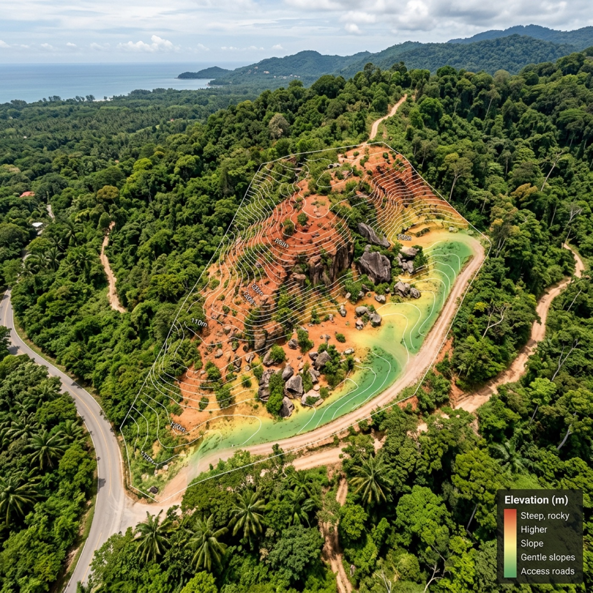

Digital Twin
A dynamic digital representation of a real-world environment — terrain, vegetation, roads and structures you can explore from any angle.

What it is
More than just a 3D model
We combine LiDAR data, drone mapping, Gaussian Splatting and photogrammetry and blend them to recreate landscapes and developments in accurate, immersive 3D space.
Real terrain, vegetation, roads, structures and environmental context become interactive digital environments that can be explored from any angle.
Why it matters
Understand a site before construction begins
Future buildings can be placed directly onto the scanned terrain, panoramic environments integrated for realistic spatial experience, and design decisions tested inside the model itself — a tool for planning, communication, visualisation and development.
- 01
Better decision making
Understand terrain, elevation, access and environmental context before construction begins.
- 02
Reduced risk & cost
Detect potential issues early and avoid expensive mistakes during development.
- 03
Realistic visualisation
Experience architecture directly inside the real landscape.
- 04
Stronger communication
Architects, developers, investors and clients share one digital space.
Continuity
The twin evolves with the project
- Stage 01
Existing land
The scanned site as it is today — the shared reference for everyone.
- Stage 02
Concept & design
Architectural proposals placed on the real terrain and tested.
- Stage 03
Earthworks
Grading, cut and fill, retaining and access documented as they happen.
- Stage 04
Completed project
A continuous spatial record instead of disconnected files at each stage.
Get started
Put your design on the real ground
Send your site location and size. We will build the twin that fits your stage — from first concept to construction.